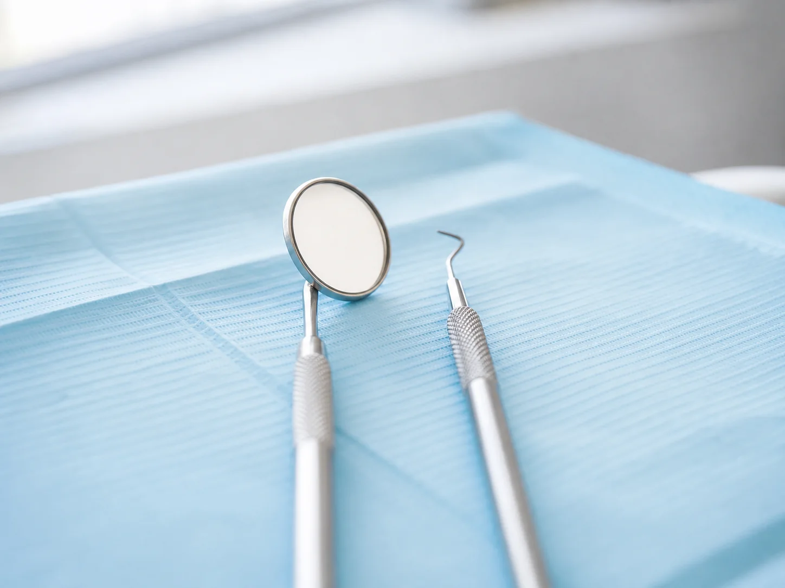

Prevenção e acompanhamento
Consultas de rotina e orientações de saúde bucal. A disponibilidade deve ser confirmada com a clínica.
AS Dental
Converse com a equipe para confirmar os atendimentos disponíveis.
Áreas de cuidado

Consultas de rotina e orientações de saúde bucal. A disponibilidade deve ser confirmada com a clínica.
Converse com a equipe para saber quais opções de avaliação e tratamento são oferecidas.
As opções dependem de avaliação profissional e devem ser confirmadas diretamente com a clínica.
O conteúdo desta página é informativo e não substitui avaliação odontológica. Confirme os serviços oferecidos com a AS Dental.
Quer saber mais?
Consulte informações sobre atendimentos e agendamento.